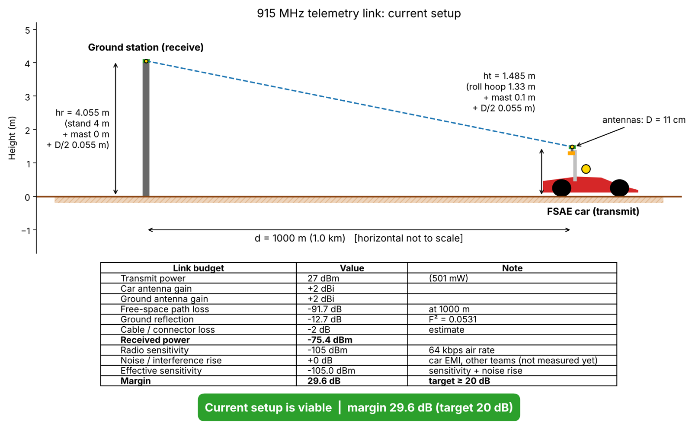
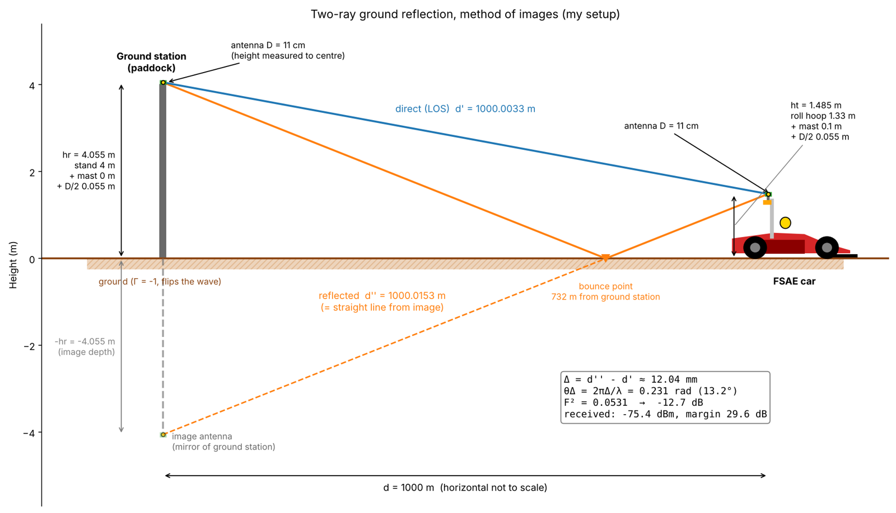
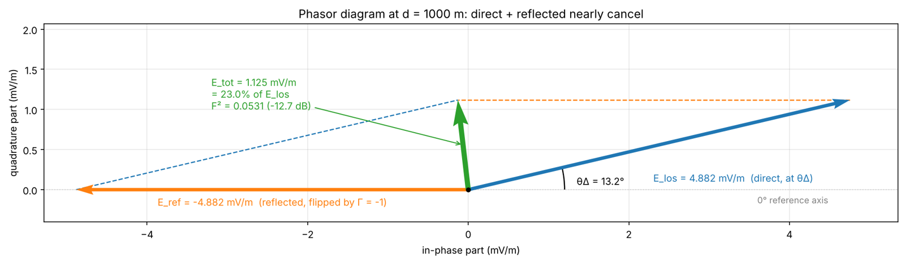
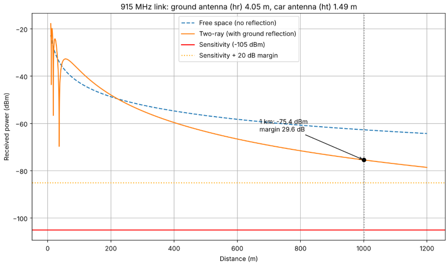
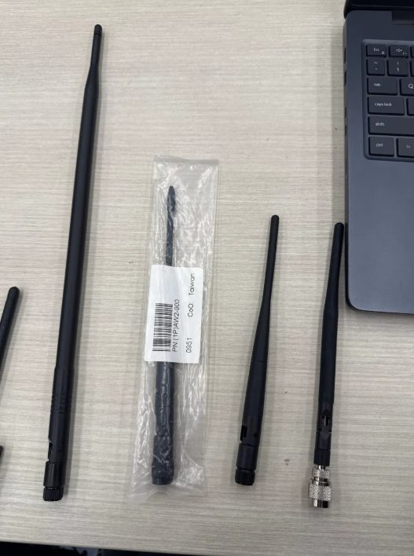

Problem: The car's telemetry only got about 3 messages per second to the pits, and we didn't know if the radios would reach across a full track.
Role: Finishing the telemetry system and designing the ground station that'll be eventually used for our Formula SAE team.
Result: Over 100 messages per second (packets cut from about 1,870 bytes to about 40), 4.8% loss at 151 ft with no line of sight, and a predicted 29.6 dB margin at 1 km.
I'm working on the car's telemetry system. A Raspberry Pi on the car reads CAN bus data and sends it to a ground station over a pair of 915 MHz SiK Holybro radios. It's written in Python. We also want it to work on future cars, so support for MkVII and MkVIII is planned.

The two radios (915 MHz, 500 mW / 27 dBm).
For the very first tests, the radios were at 9600 baud. The Pi sent 500 messages and the ground station counted how many came through:
Our target was under 10% loss, so all three passed.
Previous documentation mentioned potential issues with the radios being at 9600, so I researched the potential effects and came to the same conclusion. The original version only got about 3 messages per second through. I changed the radios from 9600 to 57600 baud and redesigned the message format, which shrank each packet from about 1,870 bytes to about 40. It now sends over 100 messages per second. I also added rate limiting per CAN ID, so the telemetry won't receive a flood of the same message.
The track should be about 700 m long, but I wanted my model to be based on the worst-case scenario. I need to know if the radios would reach that far before we build the ground station; specifically, I need the amount of loss in dB that would happen before the signal reached the ground station so I can accurately pick an antenna type for the ground station. I read up on free-space path loss and the two-ray ground reflection model, did the link budget by hand, and then put it in Python with NumPy so I can change the design numbers easily. This will be helpful when designing the ground station, since I can quickly iterate on design choices such as the height of the mast or stand, or the antenna type.
The mechanical team said the area near the roll hoop is the best spot for the antenna on the car. The receiving antenna on the ground station is higher, since it's easier to change than the car's.

The current demo. About -75.4 dBm received at 1 km, a 29.6 dB margin. Our target is 20 dB; noise still needs to be accounted for (EMI frequencies, etc).
Over flat ground the signal gets to the receiver two ways: straight across, and bounced off the ground. The bounce flips the wave. At 1 km the two paths are only about 12 mm different in length, so the waves almost cancel out. That costs about 12.7 dB on top of free-space loss, so antenna height makes a big difference.

Two-ray geometry with our antenna heights.

At 1 km the direct and reflected waves nearly cancel, leaving 23% of the direct field.

Received power vs. distance, free space compared with the two-ray model.

Antennas I tried to use for one of the radios (either no change or less change, found in E-Waste, perhaps tuned for 433 MHz radios?)
The model doesn't include noise yet. We still need to measure interference from the car's electronics and other teams' radios at the track, so the 29.6 dB is a prediction for now.